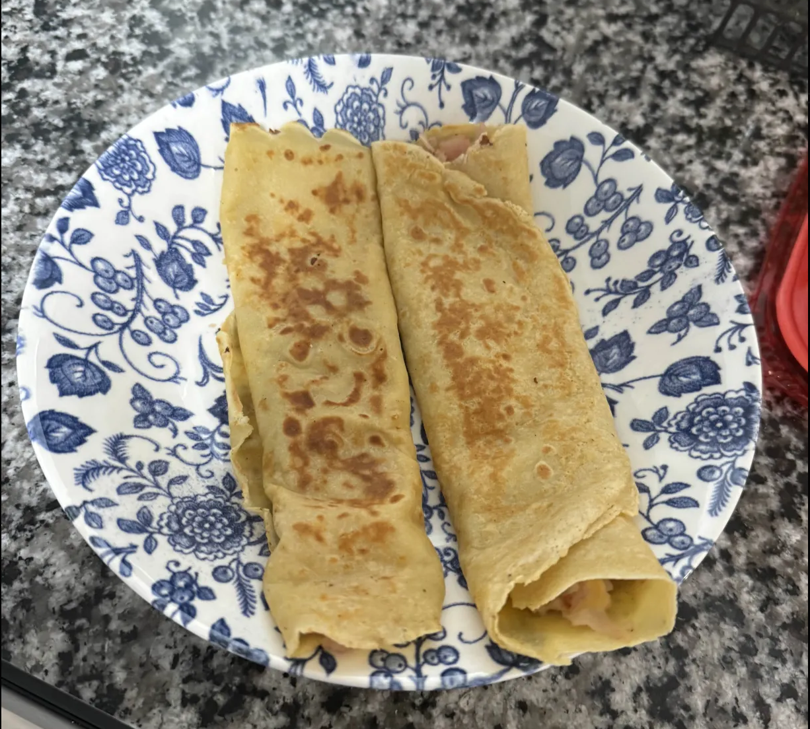

Crepes

Description
This crepe recipe is easy and quick to make! Most of the ingredients are ones that you most likely
have at home already and are affordable. Whether you want something sweet or savory (or both), crepes
are a nice meal to have for breakfast, or any other time of the day if you feel like it :)
While this recipe will go over how to make crepes with ham and cheese, you can of course add
your own twists at the end once you bake the crepe itself! This recipe is designed to be beginner-friendly
and easy to make. So if you're a college student on their own for the first time, a parent looking to make your children
and partner some quick breakfast, or a hungry teenager at midnight, then this recipe is the one.
Ingredients
- 2 tbsp of melted butter
- 1 cup of flour
- 1 cup of milk
- 1 tbsp of sugar
- 1 tbsp of vanilla extract
- 1/2 tsp of salt
- 2 eggs
- Handful of Ham
- 1 slice of American Cheese
this is enough to make about 6 crepes
Steps
- Get a semi-large bowl to put all your ingredients in
- Take all your ingredients and put them into the bowl
- If you don't have melted butter, take 2 ice-cube sized (like the ones you'd put in a drink) cubes of butter, and microwave for 15-20 seconds.
- Mix them thoroughly with a whisk or a fork until you end up with a homogenous mixture (until it's all one solid liquid with a tortilla-ish color).
- Take a pan, set your stove to medium heat, and put a little bit of butter into the pan, making sure the whole pan is covered in butter.
- Wait for about 1-2 minutes for the pan to warm up and butter to fully melt
- Take your mixture, and pour enough onto the pan that a thin layer of mixture covers the pan.
- After about 1-2 minutes, the bottom of the mixture will become solid and squishy. At this point, flip it over and do the same for the other side
- Take your ham and cheese slice, and make them cover one half of the whole circle of crepe on the pan.
- After 30 seconds, gently roll up the crepe by starting at the end with the ham and cheese.
- Now, periodically cook each section of the crepes exterior, until it's a light brown.
- the more cripy you want your crepe, the longer you let each side sit for.
- Finally, repeat these steps until you run out of mixture
- enjoy <:)
Home